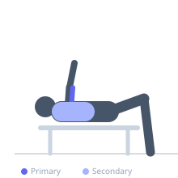

Exercise guide / 3-Board Bench Press
3-Board Bench Press
The 3-Board Bench Press stacks three 2-inch boards on the chest, leaving only the top 5-6 inches of the press range to complete. At this board height the movement is almost entirely triceps-driven, with minimal pectoral stretch-shortening involvement. It is used specifically for lockout strength development and as a heavy overload tool.
Primary muscles
triceps lateral head
triceps medial head
triceps long head
Secondary muscles
pectoralis major sternal
deltoid anterior
Stabilizers
subscapularis
trapezius middle
Equipment
Standard Barbell
Flat Bench
Optional
Power Rack (Squat Cage)


Starting position
- Lie on a flat bench. Partner holds three stacked boards against the chest. Grip the bar at shoulder-width or slightly narrower to maximize tricep involvement.
Setup
- Stack three 2x6 boards or use a padded board block. The bar need only travel 5-6 inches to complete the movement. Load can be significantly above full ROM maximum.
Steps
- Step 1: Unrack bar and lower to the board stack.
- Step 2: Touch and briefly pause.
- Step 3: Drive explosively to full lockout.
- Step 4: Return under control and repeat.
Coaching cues
- Squeeze the triceps hard at lockout
- Think 'push the ceiling away' for maximum extension
Breathing
- Brace fully before each rep. Exhale at lockout.
Range of motion
- Top 5-6 inches of pressing ROM only. Full lockout required.
Tempo
- 2-1-X-0 (explosive concentric)
Common mistakes
- Using an overly wide grip that shifts load back to the chest rather than triceps
- Failing to reach full elbow lockout
Safety
- Very heavy loads are possible — trained spotters are mandatory
- Do not attempt without reliable partner support
Training
- strength: 1–3 reps
- strength: 3–6 sets
- Rest: {'strength': 300}